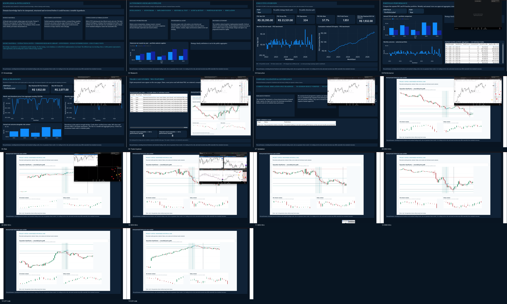

Intelligence
Interpret concepts, preserve references, frame hypotheses.
RESEARCHQuantitative research engineering
From Price Action knowledge to autonomous quantitative research.
An iterative research and engineering project combining prior Price Action study, structured knowledge, AI-assisted workflows, software systems and empirical validation. Historical market data span 2022-2026; the engineering timeline is distinct.
Historical research showcase · No live signals or investment service

The engineering problem
A book can describe a setup. A research system must decide when the context makes it valid, encode that decision causally, and accept the evidence if it fails.
AI accelerated the work. It did not remove the interpretation, review or responsibility required to make the research credible.
01 Knowledge & intelligence
The Intelligence workstream organized source material and research artifacts. It did not train a foundation model or automatically turn books into profitable rules.
Repository evidence includes source manifests, checksums, provenance sidecars, page-referenced notes, research documents, catalogs and decision records.
PDF page extraction and SQLite FTS5 class-filtered search code exist alongside versioned research documents. Extraction coverage varies by source and page.
The latest inspected Intelligence workspace had no populated local index. We therefore do not claim every source was searchable by every agent, or that a verified RAG system was in production.
Visual concepts often leave timing, context and opportunity quality implicit. Human explanations corrected ambiguity before a concept became a measurable, causal rule.
Consulting stored documents and structured notes is not model training. No fine-tuning or vector database implementation was found in the verified repository.
02 Autonomous research pipeline
Scoped agents and components advanced market research, implementation and validation through versioned artifacts, task records, implementation requests, ledgers and recorded decisions.
Interpret concepts, preserve references, frame hypotheses.
RESEARCHTranslate reviewed hypotheses into testable code.
SOFTWARERun historical data and compare cost scenarios.
EXPERIMENTReview causality, execution assumptions and evidence.
VALIDATIONEvaluate candidate versions against separate benchmarks.
SELECTIONApprove research progression. No agent had unrestricted live-order authority.
OVERSIGHTContinuous experimentation reduced repetitive manual handoffs; strategic acceptance and any transition toward live capital remained human decisions.
03 Historical portfolio performance
The preferred reference is the hash-locked P6+SIZE+CE (PSC) historical backtest. P6 is shown separately. Their end dates differ and must not be read as a same-window comparison.
Loading sanitized portfolio aggregates…
Only months with recorded portfolio activity are shown. Hover a bar for the monthly result and record count.
Running sum of monthly aggregates; this is not an account equity curve or trade-order path.
Cost applied once. Net is stored as (gross points − 30) × final units × R$0.20. No second cost deduction is applied.
Drawdown is peak-to-trough decline. The full-history card uses realized close-order data. M5-close and adverse OHLC sensitivity are described separately.
No return percentage. Opening capital is undefined, so the site reports currency results, not an assumed ROI.
04 Trade case studies
Six verified winners and two completed losses, selected from the frozen case set. Images show recorded candle geometry and higher-timeframe context where available. Exact timestamps, price scales, strategy identifiers and individual results are redacted for public release.
These examples are illustrative, not representative of the full trade distribution and not standalone evidence of profitability.
05 Engineering & validation
The portfolio demonstrates an engineering process, not a sales claim. Frozen versions, deterministic evidence and independent review matter as much as the strategy implementation.
Research direction
Led by Leonardo Bobadilha, who brought prior Price Action study and supplied contextual explanations when visual concepts were ambiguous. AI-assisted research agents supported knowledge organization, hypothesis work, implementation, historical testing and audit tasks; human review retained strategic acceptance and any authorization toward live capital.
View the research lead profileRules must use information available at decision time. Replay tests and audits help identify future-data leakage, timing assumptions and inconsistent source bars.
Gross results and the locked C30 net scenario remain separate. Cost application is reconciled to the final position size and recorded once.
Portfolio registries, strategy catalogs, trade ledgers, versioned code and decision records connect headline metrics to their source evidence.
AI supported research and implementation across workstreams. People corrected ambiguous context, reviewed candidate changes and retained approval authority.
Each transition requires evidence. Historical success alone does not establish readiness for real capital.
06 Power BI analytics showcase
The public 14-page PBIP presents separate P6 and PSC portfolio aggregates through date and portfolio dimensions. Its DAX measures support performance, cost and risk analysis; no individual trade ledger is distributed.
Public aggregate-only 14-page PBIP opened and refreshed in Power BI Desktop. Individual trade records and raw market bars remain excluded.
Companion source: Project Vortex BI showcase on GitHub.

Native Power BI Desktop capture. The model uses approved aggregate data and excludes private trade-level records.
View the full 14-page Desktop report gallery
07 Research status & limitations
The verified public benchmark is a historical backtest. Project status materials identify the forward-validation stage as simulated; no verified Paper Live P&L series or real-money result is included here.
P6+SIZE+CE portfolio results are reconciled to the registered source records under the locked C30 method.
Prospective validation is not real-money trading. No session P&L is claimed by this public showcase.
Any move toward live capital requires separate human review and authorization. No automatic progression is implied.
Risk disclosure
Past performance, including historical backtests and simulated trading results, does not guarantee future results. Live trading involves risk, and actual execution may differ materially from simulated outcomes.